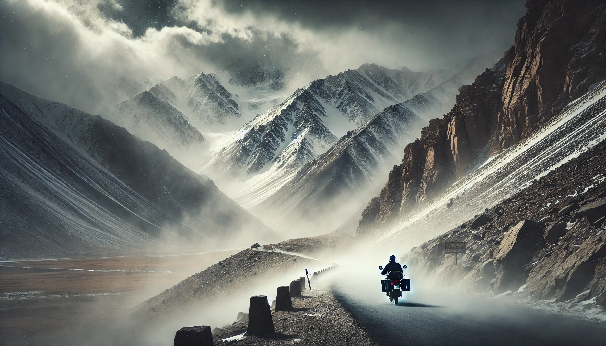

A bike ride to Leh-Ladakh is not just a journey—it’s an emotion, an adventure, and a challenge that tests both endurance and spirit
The thrill of riding through the rugged Himalayas, crossing high- altitude passes, and breathing in the crisp mountain air makes it
a dream for every biker.
The sound of the engine roaring through the valleys, the first glimpse of snow-capped peaks and
the cool mountain breeze hitting your face—it all feels surreal.
Khardung La Pass (17,982 ft) – One of the highest motorable roads in the world, challenges you
with sharp turns and thin air.

The thin oxygen levels, The freezing winds and The silence of the mountains
Every biker you meet on the way feels like family. Strangers stop to help fix a broken bike
share a cup of chai at roadside dhabas, and exchange stories of their journeys.
A ride to Leh-Ladakh is not just about the destination but the journey itself—one that stays in
your heart forever. ❤️